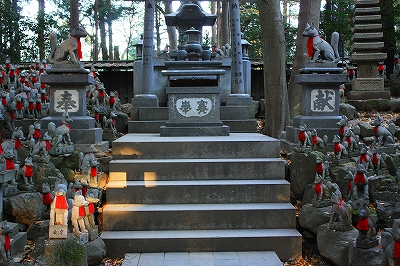

豊川稲荷/愛知県豊川市
日本三大稲荷のひとつともいわれる豊川稲荷。
中京のみならず広い範囲に信仰圏を持つ東海を代表する名刹である。
駅からの参堂は近年ホーロー看板をたくさん掲げてちょっとした町おこしテイストを醸し出している。
単にレトロっぽさを強調するだけでない雰囲気のいい参堂だ。
…実をいうとこの豊川稲荷、諸々縁があり、昔からよく訪れているのだ。
したがって私の宗教観の一部はこのお寺によって形成されているはずなのだ。全然自覚ないけど。
ので今回話が個人的な話題に陥りがちなので興味のない方はちゃっちゃっと読み飛ばしてくださいね。
参道を抜けると総門が見えてくる。
門扉は巨大な一枚モノ。いわゆる欅の如輪目というヤツ。この寺の権勢が垣間見える。
…あ、今「お稲荷さんなのに寺とか言ってるよ、コイツ」とか思われたでしょ…
そうなんです。
ここ、実は妙嚴寺という曹洞宗のお寺なんだわ。
お稲荷さんでお寺というのも変な話だが、ここは豊川ダキニ眞天（ダは口編に「宅」のうかんむりが無いヤツ、キニは「枳尼」）を祀るお寺なのである。
元々は豊穣祈念の寺だったが、今では商売繁盛祈願の寺として有名だ。
聞くところによると徳川家康が天下統一を祈願したのもこのダキニ眞天だとか。
本堂に至る道に思いっきり鳥居がある。お寺なのに。
ココの参拝風景も面白い。皆さんおもいっきり拍手打ちまくりなのだ。お寺なのに。
私はここを詣でる際、未だに拍手を打つものかどうか、合掌するのかやや困惑している。
本堂は善光寺っぽい建物。
堂内で繰り広げられる十人近くの僧侶が一斉に祈祷＆読経するシーンは一見の価値アリだ。
本堂の脇を進むとやや木々が増えてきて静かな雰囲気となる。
そこは千本幟と呼ばれるノボリが延々と続くエリア。実際には千本どころでは済まない。
私見だが東海地方、特に愛知県の寺社に幟が多いのはここ豊川稲荷の影響なのではなかろうか。
さて。ここからが本題です。
豊川稲荷の最深部に歩を進めると異様な光景が目に飛び込んでくる。
無数の狐の石像が並んでいるのだ。
…「異様」とか言ってみたものの、私自身は昔から訪れていたので実はあまり違和感がない。
こんな光景は滅多にないはずなのに。
頭では充分理解出来ても、いつもの珍寺を見た時の前頭葉がヒリヒリするような高揚感がないのだ。
参道や千本幟と同様、「懐かしい」感触としてしっかり脳幹に定着している光景なので。
ああ、今まで全然意識してなかったけどコレってもしかしてオレの珍寺嗜好のルーツなのでは？
このサイトで繰り返し繰り返し紹介してきた「同じモノが大量に並んでる風景」ってよ〜く考えたら原点はココだね〜。
今まで珍寺としてあまり意識していなかったここの狐塚が特異だということは漫画家の星野之宣さんの傑作、「宗像教授伝奇考」に掲載されていたシーンを見て、改めて気づいた次第。
恐らく「宗像教授伝奇考」を見なければごく当たり前の光景として記憶処理され続けていたに違いない。
見えているのに見えていないとはこういう事を言うんですかね〜。

奉納されている狐の石像の台座には正面に奉納者の所在、側面に奉納者の氏名が刻まれている。
多くは愛知県内の市町名だが、関東の都県名が記されたものも少なくはない。
豊川稲荷の信仰圏の広さを如実に物語っている。
今回改めて写真に撮ってみてこうして客観視してみると…

やっぱ相当珍だわ。
もしもこれが本当の狐だったら相当コワイだろうなあ〜。王子の狐もビックリでしょ。
何かスターシップトゥルーパーズを思い出しちゃいました…
ほとんど同じフォーマットの狐だったが、中にはチョット変わった狐もいて面白かった。
まあ、珍寺舎弟的にはこの狐塚以外はあまり見所はないかもしれないが、珍寺大道場秘伝のタレ的な存在ということで。
このシリーズはかなり面白いです。オススメ。